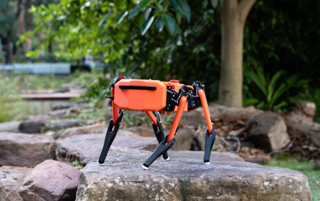
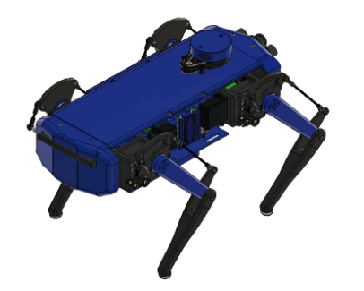

Introduction
This Alpha Project focuses on replicating and simulating a Dingo-style quadruped robot using Fusion 360, ROS, and Gazebo.
Inspired by Clearpath Robotics' Dingo, the project demonstrates my understanding of quadruped robot structure, kinematics, leg control, URDF/Xacro modelling and simulation workflows.
Project Highlights
Project Workflow
Research & Planning
Studied real-world quadruped robots such as Spot and Dingo to understand leg layout, degrees of freedom and joint strategies.
Fusion 360 Design
Designed the robot body and articulated legs in Fusion 360 and prepared the required STL models for simulation.
URDF/Xacro Integration
Converted the CAD model into URDF/Xacro and defined links, joints, visual, collision and inertial properties.
Gazebo Simulation
Tested the robot in Gazebo using physics simulation, balance checking and stability testing.
Leg Control & Gait
Implemented task-space control and used the gait engine to coordinate foot positions through Python and ROS topics.
Keyboard Control
Used ROS-based keyboard control to interact with the simulated quadruped and test movement commands.
Project Media
The following images and videos showcase the robot design, Gazebo simulation and ROS-based control developed during the project.

Dingo Quadruped – Reference and Research

Dingo Quadruped – Fusion 360 Design
Dingo Quadruped – Gazebo Simulation
Dingo Quadruped – ROS Leg Control and Gait
Conclusion
This project helped me develop practical skills in robotic design, ROS-based control, URDF/Xacro structuring, and Gazebo simulation.
Working with the quadruped model also improved my understanding of robot kinematics, leg movement, gait generation and simulation-based testing.
DingoQuadruped Framework
View the repository used for the quadruped simulation and ROS implementation.